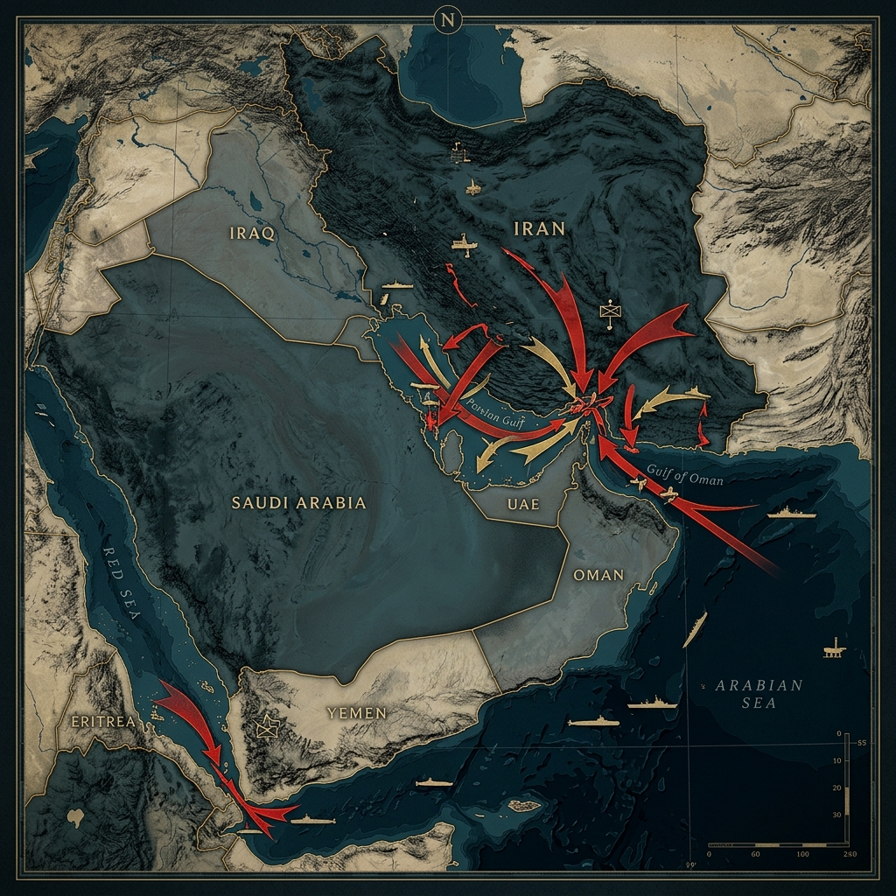

⚔️ Il Fallimento di Islamabad e il Blocco Navale CENTCOM
La narrazione della de-escalation si è ufficialmente frantumata. I negoziati di Islamabad — guidati dal Vicepresidente USA JD Vance con Steve Witkoff e Jared Kushner, sul fronte iraniano rappresentato dal Presidente del Parlamento Qalibaf e dal Ministro degli Esteri Araghchi — sono collassati dopo 21 ore di trattative. Il 12 aprile 2026 Vance ha dichiarato la fine dei colloqui.
Il giorno successivo, il Comando Centrale degli Stati Uniti (CENTCOM) ha avviato il blocco navale dei porti iraniani, entrato in vigore il 13 aprile 2026 alle 10:00 ET. Per implementarlo la US Navy ha dispiegato due Carrier Strike Group — USS Gerald R. Ford CSG e USS Abraham Lincoln CSG — affiancati da cacciatorpedinieri e unità per lo sminamento. CENTCOM.mil
📌 Precisazione tecnica sul perimetro del blocco
Il CENTCOM ha chiarito ufficialmente che le forze USA "will not impede freedom of navigation for vessels transiting the Strait of Hormuz to and from non-Iranian ports." Il blocco colpisce esclusivamente navi dirette verso o provenienti da porti iraniani, non tutto il traffico dello Stretto. Una distinzione legale rilevante, ma che non cambia la sostanza: lo Stretto rimane de facto ostruito dalle mine iraniane e dall'instabilità bellica. Euronews, 13 apr.

Lo Shock dell'Offerta: Dati Ufficiali EIA al 15 Aprile 2026
L'EIA (U.S. Energy Information Administration) certifica nel suo rapporto trimestrale Q1 2026 un rialzo dei prezzi senza precedenti dal 1988 in termini reali: EIA Q1 Review
| Data / Periodo | Brent ($/bbl) | WTI ($/bbl) | Note |
|---|---|---|---|
| Inizio 2026 | $61 | ~$57 | Pre-conflitto — proiezioni di surplus |
| 28 feb. 2026 | ~$72 | ~$68 | Giorno degli attacchi USA-Israele su Iran |
| 9 mar. 2026 | $94 | ~$88 | Data chiusura STEO EIA di marzo — +50% YTD |
| 31 mar. 2026 | $118 | — | Fine Q1 — rialzo trimestrale record dal 1988 |
| Inizio apr. 2026 | ~$118 (picco) | ~$106 | Massimo assoluto dei futures nella crisi — prezzi fisici spot più elevati (EIA April STEO) |
| 7 apr. 2026 | $109 | $112 | Ultimatum Trump a Teheran per Hormuz |
| 13 apr. 2026 | ~$103 | ~$99 | Rimbalzo +8% post-annuncio blocco CENTCOM |
| 15 apr. 2026 (oggi) | ~$95–97 | ~$91 | Calo su speranze nuovi negoziati USA-Iran |
Attualmente il Brent tratta intorno ai $95–97/barile, con il WTI a circa $91. Il calo rispetto al picco riflette l'ottimismo del mercato sulla possibilità che i negoziati riprendano entro i prossimi giorni prima della scadenza del cessate il fuoco del 22 aprile. L'IEA ha avvertito che questo rimbalzo potrebbe essere prematuro: la chiusura prolungata dello Stretto minaccia di annullare la crescita globale della domanda petrolifera — sarebbe il primo calo annuale dal 2020. TradingEconomics, 15 apr. CNBC, 14 apr.
Sul fronte della produzione, l'EIA April STEO stima che Iraq, Arabia Saudita, Kuwait, EAU, Qatar e Bahrein abbiano collettivamente ridotto la produzione di 7,5 milioni di barili/giorno a marzo, con una proiezione di 9,1 milioni b/g in aprile. EIA STEO Apr. 2026
📊 Cosa Dicono i Grandi Banche: JP Morgan e Goldman Sachs
Il consenso delle maggiori istituzioni finanziarie globali è unanime nell'identificare questa come la crisi di offerta petrolifera più grave nella storia del mercato moderno.
"Il più grande shock di offerta nella storia del mercato globale del greggio."— Goldman Sachs, commodities analyst Daan Struyven, marzo 2026 TheStreet
Goldman Sachs ha rivisto più volte al rialzo le sue previsioni nel corso della crisi. Il modello di base ora assume che i flussi attraverso Hormuz restino al 5–10% dei livelli normali per circa 6 settimane, seguito da un recupero graduale. In questo scenario, Goldman avverte che il Brent potrebbe mediare sopra i $100/barile per tutto il 2026 se la chiusura si prolunga ulteriormente. Lo scenario estremo — chiusura di 5-6 mesi — vedrebbe il Brent spingersi verso i $135/barile, con un impatto inflattivo che renderebbe quasi impossibili i tagli dei tassi da parte della Federal Reserve. OilPrice/Bloomberg
"Il Brent potrebbe sovra-performare verso i $150 al barile se lo Stretto di Hormuz resta effettivamente chiuso fino a metà maggio."— JP Morgan Commodities Research, aprile 2026 TheStreet
JP Morgan ha emesso il warning più aggressivo: la banca newyorkese avverte che uno scenario di chiusura prolungata fino a metà maggio trasformerebbe l'attuale shock regionale nel più grande shock energetico della storia moderna, con ricadute sistemiche su inflazione, tassi e mercati finanziari globali. Solo un mese fa, la stessa JP Morgan prevedeva il Brent in recupero al range dei $60 entro fine 2026.
| Istituzione | Scenario base 2026 | Scenario avverso | Previsione Q4 2026 |
|---|---|---|---|
| Goldman Sachs | $85/bbl media annua | $135/bbl (6 mesi chiusura) | $71/bbl (base) — $93 (risk) |
| JP Morgan | Altamente volatile | $150/bbl (chiusura a metà mag.) | N/D |
| EIA (Governo USA) | $103 media marzo | $115/bbl picco Q2 | ~$70 (normaliz. fine 2026) |
| Wood Mackenzie | $90+/bbl = recessione USA/UE | $200/bbl = recessione globale | N/D |
Va sottolineato che tutte le previsioni "ottimiste" (Brent < $80 a fine anno) assumono una riapertura dello Stretto nelle prossime settimane. Con la situazione attuale — blocco CENTCOM attivo, cessate il fuoco in scadenza il 22 aprile, negoziati in stand-by — tale scenario rimane incerto.
⚡ La Svolta Analitica: Dal Caos Iraniano al Controllo USA
Questa è forse la dimensione meno compresa dalla comunicazione mainstream. Non si tratta semplicemente di "chi blocca Hormuz": si tratta di come viene bloccato, e di cosa cambia nella qualità dello shock. La differenza è abissale.
🇮🇷 Fase 1: Il Blocco Iraniano
(28 feb. → 12 apr. 2026)
- Mine, attacchi sporadici, sequestri, minacce
- Alcune navi passavano, altre no
- Decisione basata sul rischio percepito
- Pedaggi di transito imposti dall'Iran
- Il mercato si adattava con rotte alternative
- Cina e altri Paesi continuavano ad acquistare petrolio iraniano
- Prezzi alti per paura e incertezza
"Forse passi. Forse vieni attaccato. A tuo rischio e pericolo."
🇺🇸 Fase 2: Il Blocco USA
(13 apr. 2026 → oggi)
- Regole chiare: blocco dei porti iraniani
- Selezione militare di chi può passare
- Controllo navale continuo con due Carrier Strike Group
- Intercettazione di navi che hanno pagato pedaggi all'Iran
- Flussi precisi interrotti: colpisce direttamente le esportazioni iraniane
- Forza una scelta geopolitica a Cina e India
- Prezzi alti per decisione strutturale
"Passi SOLO se ti è permesso dalla Marina degli Stati Uniti."
La conseguenza più profonda non è nei numeri del prezzo — è nella qualità dello shock. Con il blocco iraniano, lo shock era temporaneo, imprevedibile, adattabile. Con il blocco USA, lo shock diventa sistemico, prolungabile a volontà politica, un'arma economica diretta. Hormuz non è più uno stretto: è un filtro, un interruttore geopolitico. Per la prima volta nella storia, non è più solo il caos a muovere i prezzi del petrolio, ma una scelta politica precisa e calcolata da Washington. Questo cambia ogni modello previsionale sui mercati energetici.
🇮🇹 Meloni nel Golfo: Il Primo Leader Occidentale a Esserci
Mentre i leader europei rimanevano a guardare, l'Italia agiva. Il 3-4 aprile 2026, la Presidente del Consiglio Giorgia Meloni ha compiuto una missione diplomatica a sorpresa nel Golfo Persico — la prima di un leader occidentale nell'area dall'inizio del conflitto — visitando in successione Arabia Saudita, Qatar ed Emirati Arabi Uniti. Governo.it
🗺️ Le Tre Tappe della Missione Golfo (3–4 Aprile 2026)
La missione era stata tenuta segreta fino all'atterraggio a Gedda per ragioni di sicurezza — nello stesso giorno 47 droni e 18 missili balistici iraniani avevano colpito il territorio emiratino. IlPoliticoWeb Euronews
Le parole di Meloni nel videomessaggio ufficiale da Palazzo Chigi sono cristalline: "Per l'Italia è importante, in una fase così difficile, essere presente nei luoghi dove si decide una parte fondamentale della nostra sicurezza e anche del nostro futuro economico. Questa missione è la prima di un leader europeo nel Golfo dall'inizio di questa nuova fase del conflitto." Governo.it — comunicato ufficiale
La valenza strategica è duplice. Sul piano energetico immediato: dai tre Paesi visitati proviene circa il 15% del greggio necessario all'Italia. Sul piano geopolitico di lungo periodo: le monarchie del Golfo stanno rivalutando le proprie alleanze — e l'Italia, arrivando per prima, si trova in una posizione negoziale superiore a qualsiasi altro Paese europeo. Va aggiunto un dato distintivo: il Governo ha negato a Washington l'uso della base di Sigonella per aerei militari diretti in Medio Oriente — un atto di autonomia che ha segnalato la volontà di mantenere una propria linea diplomatica pur restando nell'alleanza atlantica.
🛑 Dossier Verità: Falsi Miti sui Prezzi alla Pompa
Il petrolio che vediamo "scendere" in borsa non è la benzina che entra nella nostra automobile domani mattina. Le dinamiche istantanee del greggio devono scontrarsi con i tempi logistici insopprimibili della filiera: contratti di compravendita con anticipo di settimane, raffinazione, trasporto su gomma. Ecco la verità fattuale sui due falsi miti più diffusi.
❌ FALSO MITO 1: "I prezzi salgono subito, ma scendono piano. È la prova della speculazione."
La Realtà Economica: In macroeconomia questo fenomeno è codificato come trasmissione asimmetrica dei prezzi ("razzi e piume"). Il listino alla pompa non riflette la cisterna nel piazzale oggi, bensì il costo di rimpiazzo futuro. Se il Brent esplode, il distributore deve adeguare subito i prezzi — altrimenti non incasserà abbastanza per pagare il successivo carico al prezzo di mercato, rischiando il fallimento. Al contrario, all'abbassamento del greggio le riduzioni tardano: il gestore deve prima smaltire carburante già acquistato settimane prima ai prezzi massimi.
❌ FALSO MITO 2: "È solo ingordigia e speculazione dell'intera filiera."
La Realtà Economica: Lo sfasamento temporale è logistico-finanziario, non speculativo. Se i prezzi alla pompa fossero guidati da arbitrio puro, sarebbero slegati dalle borse. Invece i listini replicano metodicamente le fluttuazioni globali con la sola inerzia fisica della filiera reale rispetto ai tempi virtuali di Wall Street. In tutto questo pesa la base fissa delle accise — che in Italia rimane tra le più alte d'Europa indipendentemente da qualsiasi crisi.
✅ LA RISPOSTA CONCRETA DELLO STATO: Il Governo Stanzia Quasi 1 Miliardo sulle Accise
Dati Verificati: Il Governo Meloni ha stanziato finora quasi 1 miliardo di euro per la riduzione delle accise sui carburanti, nel tentativo di attutire l'impatto del rialzo del greggio su famiglie e imprese. Il Decreto Carburanti, in sinergia tra MIMIT e MEF, mantiene attivo il monitoraggio del Garante dei Prezzi. Le verifiche della Guardia di Finanza su migliaia di impianti stradali e autostradali hanno prodotto denunce per frode in commercio, contestazioni per mancata trasparenza sul portale 'Osservaprezzi' ed espulsioni temporanee di licenze. Il Post, 4 apr. 2026
🌍 L'Alternativa Strutturale: Piano Mattei e Algeria
La crisi di Hormuz ha reso palese quello che gli strateghi energetici ripetono da anni: la dipendenza dall'unico collo di bottiglia mediorientale è un rischio sistemico. L'Italia dispone di un'alternativa infrastrutturale in costruzione: il Piano Mattei.
La visita di Meloni in Algeria — perno del Piano Mattei e fornitore di gas naturale fondamentale per l'Italia attraverso il Trans-Mediterranean Pipeline — rappresenta uno dei pilastri operativi concreti di questa strategia di diversificazione. Consolidando i rapporti bilaterali, l'Algeria è diventata formalmente la chiave per ridurre la vulnerabilità italiana rispetto alle rotte mediorientali.
Il Piano Mattei dispone di 5,5 miliardi di euro complessivi — di cui 3 miliardi dal Fondo Italiano per il Clima (gestito da Cassa Depositi e Prestiti) e 2,5 miliardi dal Fondo Rotativo per la Cooperazione allo Sviluppo (MAECI). Wikipedia — Piano Mattei
Le Tappe Fondamentali (Aggiornamento Marzo 2026)
- 18 Paesi africani coinvolti: ai 9 pilota originari si sono aggiunti nel 2025 Angola, Ghana, Mauritania, Senegal e Tanzania; nel marzo 2026, in una conferenza alla Banca d'Italia con il Presidente della Banca Mondiale Ajay Banga, Meloni ha annunciato l'ingresso di Gabon, Rwanda, RDC e Zambia. Info-Cooperazione
- Corridoio di Lobito: asse strategico Angola–Zambia–RDC per collegare l'Atlantico alle risorse interne dell'Africa centrale, aggirandosi i corridoi instabili. I nuovi partner rafforzano direttamente questa dimensione infrastrutturale. Economy Magazine
- 1,3 miliardi già mobilitati (dati al Vertice di Addis Abeba, 2026) su 5,5 previsti. Il Piano Mattei è integrato nel Global Gateway dell'Unione Europea (150 miliardi destinati all'Africa) e beneficia del pieno supporto della Banca Mondiale e della Banca Africana di Sviluppo.
- Laboratori Mattei e formazione professionale: la misura SIMEST "Misura Africa" (200 milioni) e il Plafond Africa di CDP (500 milioni) finanziano programmi nei settori energetico, agricolo e industriale per costruire partenariati durevoli e frenare le cause strutturali dell'emigrazione.
📌 Nota di contesto critico sul Piano Mattei
Completezza richiede di segnalare che, dei 5,5 miliardi annunciati, risultano mobilitati circa 1,3 miliardi al marzo 2026. Le risorse non sono interamente "nuove": i 3 miliardi del Fondo Italiano per il Clima erano originariamente destinati agli obiettivi climatici dell'Accordo di Parigi. Analisti internazionali sottolineano la mancanza di un sistema di monitoraggio indipendente e la necessità di una co-progettazione più profonda con i partner africani per evitare derive top-down. Queste criticità non invalidano il piano, ma richiedono un'accelerazione nell'attuazione concreta. AIOM, 2026
La lezione della crisi di Hormuz è definitiva: la sovranità energetica non si costruisce durante un'emergenza bellica — si costruisce in anticipo, con decenni di infrastrutture, rotte alternative e relazioni diplomatiche consolidate. Il Piano Mattei è la scommessa italiana su questo orizzonte. La missione nel Golfo di aprile ne è la manifestazione tattica di breve periodo. L'Algeria ne è il pilastro operativo già attivo.